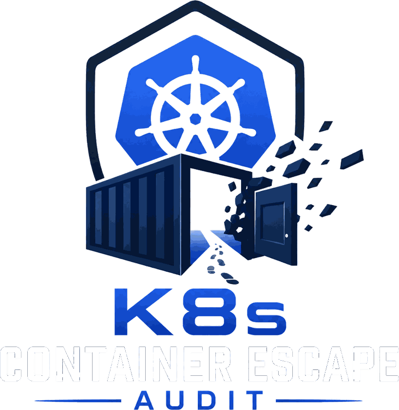

A single bash script runs inside a Docker or Kubernetes container and reports every viable escape vector — 51 checks plus a config-driven CVE engine. It makes no changes to the system. Built for penetration testers and security teams running real assessments.
For authorised security assessments only. Do not run this on systems you don't have explicit written permission to test.

Each check maps to an established escape primitive — privileged config, capability abuse, namespace breakout, mount exposure, kernel surface, Kubernetes RBAC, cloud metadata theft, container-runtime escape, and kernel hardening posture.
Detects --privileged containers and the full capability set that comes with them — the single fastest path to host root.
Flags dangerous Linux capabilities that enable mount, ptrace, module loading, and eBPF escapes even without full privilege.
Host PID, network, IPC, and mount namespace sharing, plus root-in-container UID mapping that maps straight to host root.
Runtime sockets, host filesystem bind mounts, writable auth files and cron dirs, linker config, and OCI hook injection paths.
cgroup release_agent escapes, /proc and /dev/mem exposure, eBPF reachability, debugfs/tracefs, keyring, and page-cache writes.
Service account token reach, live RBAC escalation probing, unauthenticated kubelet API, and exposed secret mount directories.
Checks whether the AWS, Azure, or GCP instance metadata service is reachable — a direct route to cloud credentials and role assumption.
io_uring reachability, kTLS/sockmap surface, Kata agent socket exposure, and KVM/arm64 guest-to-host vGIC-ITS probing.
Reads sysctl values against a hardening baseline — kptr/dmesg restrict, ASLR, unprivileged userns clone, and a dangerous-module audit.
No raw flags to decode. Each result tells you what it is, what an attacker does with it, how hard that is, and exactly how to close it — ready to paste into a report.
A single CRITICAL is generally enough for full host compromise. But findings combine — a MEDIUM seccomp gap alongside a HIGH capability becomes a practical escape path the tool flags accordingly.
Checks 24–51 add coverage for vectors most scanners miss — including container-runtime escapes (io_uring, kTLS/sockmap, Kata, KVM/arm64) — alongside a CVE engine driven by an updatable plain-text database you can version independently of the script.
The script and its CVE database sit side by side. Output goes to a timestamped report — or JSON for piping into CI, SIEM, or jq.
Free for personal use, internal assessments, and non-profit work under CC BY-NC 4.0.